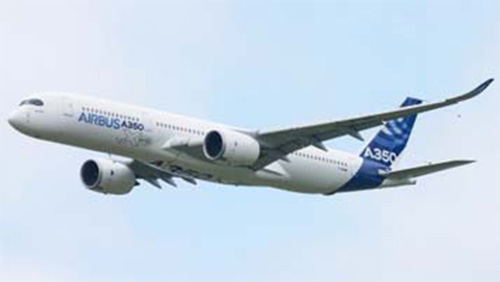

A350

- Разработчик: Airbus
- Страна: Европа
- Первый полет: 2013
- Тип: Дальнемагистральный пассажирский самолет
Airbus A350 — это семейство дальнемагистральных широкофюзеляжных двухдвигательных пассажирских самолётов, разработанных концерном Airbus. Он может перевозить от 250 до 350 пассажиров в типовой трёхклассной конфигурации, а максимальная вместимость составляет 440–550 пассажиров в зависимости от модификации. A350 позиционируется как самый тихий самолёт, уровень шума от звукового следа снижен на 40 %, а выбросы CO₂ уменьшены на 25 %. Прототип A350 совершил первый полёт в 2013 году, а первый сертификат типа был выдан в 2014 году. Стартовый заказчик — Qatar Airways.
| Летно технические характеристики | |
|---|---|
| Модификация | A350-900 |
| Размах крыла максимальный, м | 64.75 |
| Длина, м | 66.89 |
| Высота, м | 17.05 |
| Площадь крыла, м2 | 443.00 |
| Масса, кг | |
| - пустого самолета | 115700 |
| - нормальная взлетная | 268000 |
| Тип двигателя | 2 ТРДД Rolls-Royce Trent XWB-84 |
| Тяга, кН | 2 х 374/td> |
| крейсерская скорость, км/ч | 903 |
| Практическая дальность с 1300 кг груза, км | 15000 |
| Практический потолок, м | 13100 |
| Экипаж, чел | 2 |
| Полезная нагрузка: | 314 пассажиров в трехклассной конфигурации или 366 пассажиров в двухклассной конфигурации |